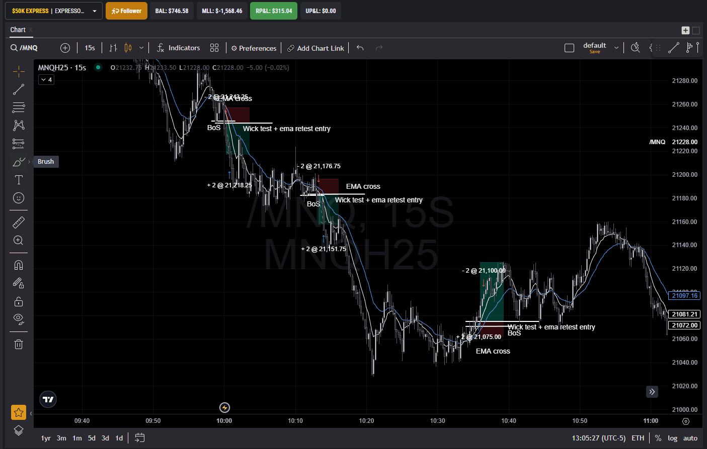

15-Second Chart Momentum Scalping System
The strategy focuses on momentum scalping in the NQ (Nasdaq Futures) market, utilizing the 15-second chart timeframe to capture short-term momentum moves.
Target: 25 points per trade
Stop Loss: 13 points per trade
Risk:Reward Ratio: 1:1.92
Trading exclusively on the 15-second chart for NQ futures.
Trading Window: 9:30 AM - 11:00 AM ET (NY Session open)
Reason: Captures micro-movements with high precision during the most volatile and liquid market hours.

Starting Balance: $2,000
Current Balance: $2,260
Net Growth: +$260 (+13%)
Notable Phases:
With a 54% win rate and 1:1.92 risk:reward ratio, the mathematical expectancy per trade is positive:
(0.54 × 1.92) - (0.46 × 1) = +0.58
This means that for every unit of risk, the expected return is 0.58 units of profit over a large enough sample size.
| Phase | Account Size | Risk/Trade | Risk % | Target | Contracts |
|---|---|---|---|---|---|
| 1 | $800 | $25 | 2.5% | $2,000 | 1 MNQ |
| 2 | $2,000 | $50 | 2.5% | $5,000 | 2 MNQ |
| 3 | $5,000 | $125 | 2.5% | $10,000 | 5 MNQ |
| 4 | $10,000 | $250 | 2.5% | $15,000 | 10 MNQ |
| 5 | $15,000 | $375 | 2.5% | $20,000 | 15 MNQ |
Maximum daily loss: 4 trades or $100 (12.5% of account)
This conservative approach provides psychological comfort during the initial phase.
As account grows, daily loss limit remains at 4 consecutive trades or 10% of account value, whichever is smaller.
After 3 consecutive losses, take a mandatory 10-minute break to reset mentally before continuing.
Never increase position size after losses. Maintain the 2.5% risk per trade rule at all times.
Never enter a second trade in the same trend direction after being stopped out.
Never enter a trade if the EMA cross occurred before market open, as it doesn't represent NY session potential trend.
After 3 consecutive losses, take a mandatory 10-minute break to reset mentally before continuing.
Phase 1: $800 account
Trading with 1 MNQ contract (risking $25 to make $50 per trade)
Estimated time to reach $2,000: 60 trading days (3 months)
Reaching $50,000 in approximately 9.3 months with consistent execution
This represents a realistic growth trajectory while maintaining disciplined risk management